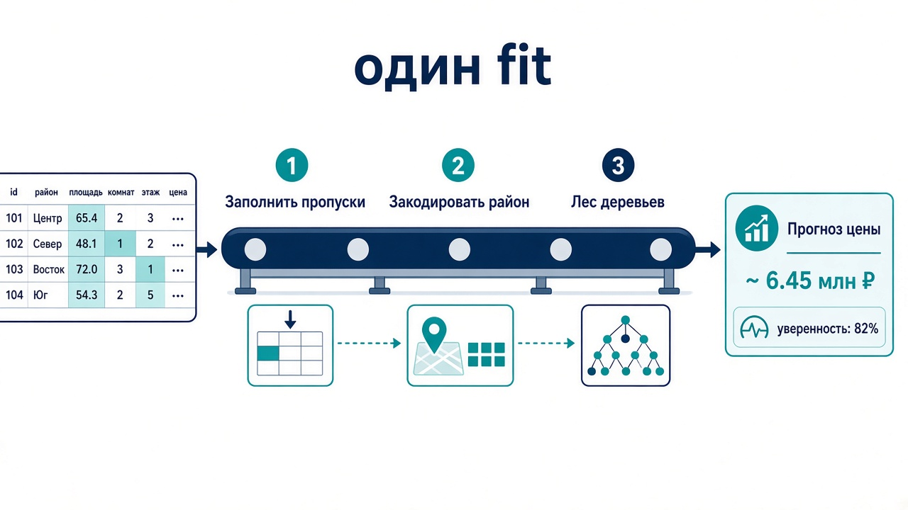

4. Конвейеры обработки данных (Pipelines)
Важный навык для развёртывания и тестирования сложных моделей с предварительной обработкой данных.

Если открыли эту страницу отдельно от предыдущих, сначала выполните ячейку. Она заново читает таблицу и делит её так же, как на странице про пропуски: 8000 строк обучение, 2000 проверка, random_state=0.
import pandas as pd
from sklearn.model_selection import train_test_split
from sklearn.ensemble import RandomForestRegressor
from sklearn.metrics import mean_absolute_error
from sklearn.impute import SimpleImputer
flats = pd.read_csv("module-7-0/data/flats_gaps.csv")
y = flats.price
X = flats.drop(columns=["price", "price_note", "flat_id"])
X_train, X_valid, y_train, y_valid = train_test_split(
X, y, train_size=0.8, test_size=0.2, random_state=0
)
num_cols = list(X_train.select_dtypes(include="number").columns)
X_train_num = X_train[num_cols].copy()
cols_with_missing = [col for col in num_cols if X_train_num[col].isna().any()]
В прошлых ячейках легко ошибиться руками:
- посчитать среднее по проверке, а не по обучению;
- заполнить пропуски уже после того, как построили флаг;
- забыть закодировать район перед
predict; - выбросить год, хотя его можно было заполнить.
Конвейер собирает подготовку и лес в один объект. ColumnTransformer ведёт числа и текст разными ветками, потому что среднее по слову «центр» бессмысленно, а столбец из нулей и единиц для площади не нужен.
Что делает каждая ветка:
- числа
area,year,rooms—SimpleImputer(strategy="constant"). Пустую ячейку заменяют константой. Безfill_valueконстанта равна 0; - район — сначала самый частый район вместо пустого текста (
most_frequent), затем прямое кодирование.
В predict передают сырую проверку, с пустыми ячейками и словами. Конвейер сам повторяет шаги, которые запомнил на fit. Отдельный imputer.transform здесь писать не нужно.
Ячейка:
from sklearn.compose import ColumnTransformer
from sklearn.pipeline import Pipeline
numerical_cols = ["area", "year", "rooms"]
categorical_cols = ["district"]
# strategy="constant" пишет в пустую ячейку одно и то же число, по умолчанию 0.
# Это другой способ, не среднее из раздела 7.0.1. Его и сравниваем отдельной MAE.
numerical_transformer = SimpleImputer(strategy="constant")
# Внутренний Pipeline: сначала закрыть пустой район, потом превратить слово в столбцы 0/1.
# OneHotEncoder не принимает NaN, поэтому imputer стоит раньше onehot.
categorical_transformer = Pipeline(
steps=[
("imputer", SimpleImputer(strategy="most_frequent")),
("onehot", OneHotEncoder(handle_unknown="ignore")),
]
)
# ColumnTransformer применяет num только к трём числам, cat только к district.
# Остальные столбцы X_train (их нет в этих списках) в модель не попадут.
preprocessor = ColumnTransformer(
transformers=[
("num", numerical_transformer, numerical_cols),
("cat", categorical_transformer, categorical_cols),
]
)
model = RandomForestRegressor(n_estimators=30, random_state=0)
# Порядок в steps важен: сначала preprocessor, потом model.
# Наоборот нельзя: лес не умеет читать пустые ячейки и слово «центр».
my_pipeline = Pipeline(steps=[("preprocessor", preprocessor), ("model", model)])
# fit на сыром X_train: внутри и заполнение, и кодирование, и обучение леса.
my_pipeline.fit(X_train, y_train)
# predict тоже на сыром X_valid. Подготовка проверки идёт теми правилами, что выучены на обучении.
preds = my_pipeline.predict(X_valid)
mae_pipeline = mean_absolute_error(y_valid, preds)
print(f"MAE конвейера: {mae_pipeline:.2f}")
Критерий 7.0.3. MAE конвейера — 129.81. Она заметно ниже 278 из прошлого раздела. Причина не в «магии конвейера», а в составе признаков: год и комнаты больше не выбрасываются, район тоже остаётся. Конвейер только не даёт перепутать порядок шагов.